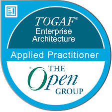

TOGAF (The Open Group Architecture Framework) es un marco de arquitectura empresarial que proporciona métodos y herramientas para desarrollar y mantener arquitecturas de tecnología de información.
El núcleo de TOGAF, proporciona un proceso iterativo y cíclico para desarrollar arquitecturas empresariales. Consta de fases preliminares, de visión, de arquitecturas (negocio, sistemas de información, tecnología) y de implementación.
Un repositorio virtual que contiene todos los activos arquitectónicos disponibles para la organización, desde modelos genéricos hasta arquitecturas específicas implementadas.
Almacena las salidas de los proyectos de arquitectura, incluyendo descripciones, modelos, especificaciones y decisiones arquitectónicas para su reutilización.
Provee un modelo estructurado para el contenido arquitectónico que permite que los entregables sean definidos, estructurados y presentados de manera consistente.
Modelo para categorizar y almacenar los resultados de la actividad arquitectónica dentro de una empresa. Proporciona métodos para clasificar soluciones y activos arquitectónicos.
TOGAF incluye el Modelo de Referencia Técnico (TRM) y el Modelo de Referencia para la Infraestructura de Información Integrada (III-RM), que sirven como bases para arquitecturas específicas.